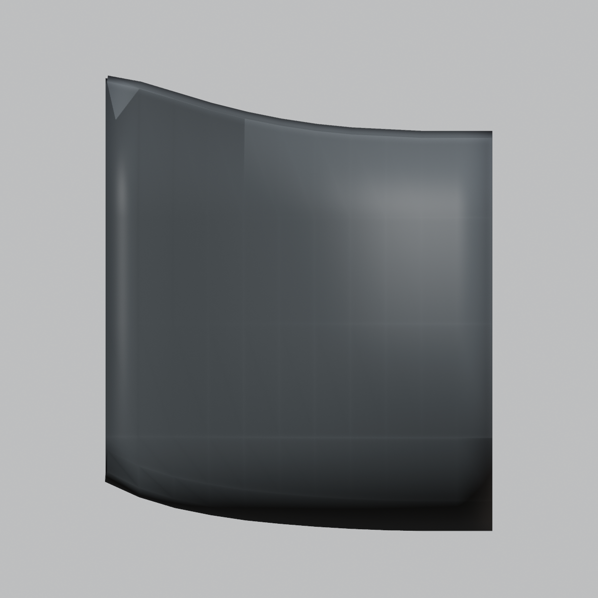
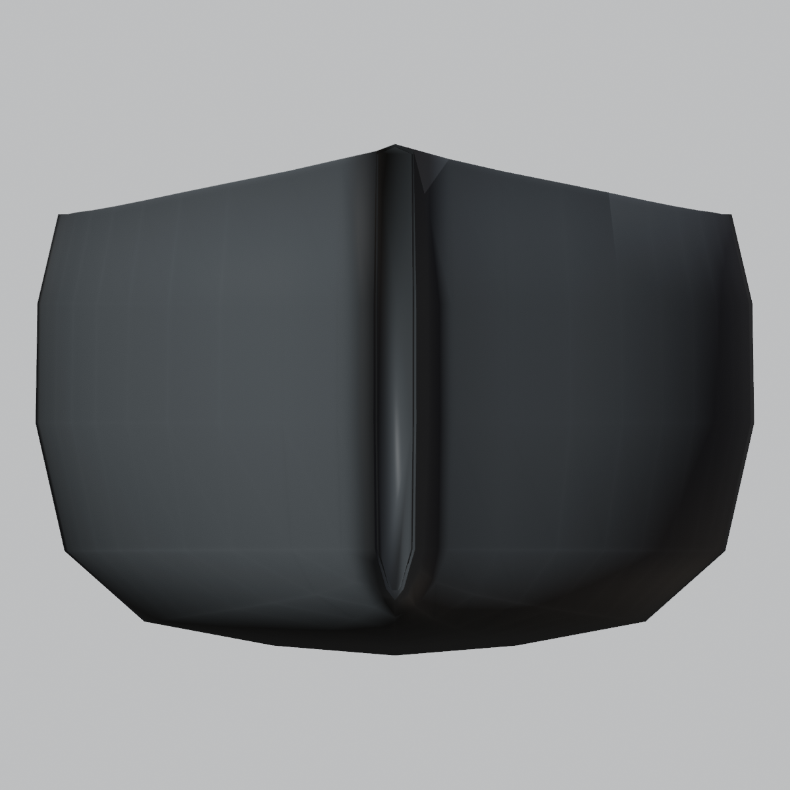
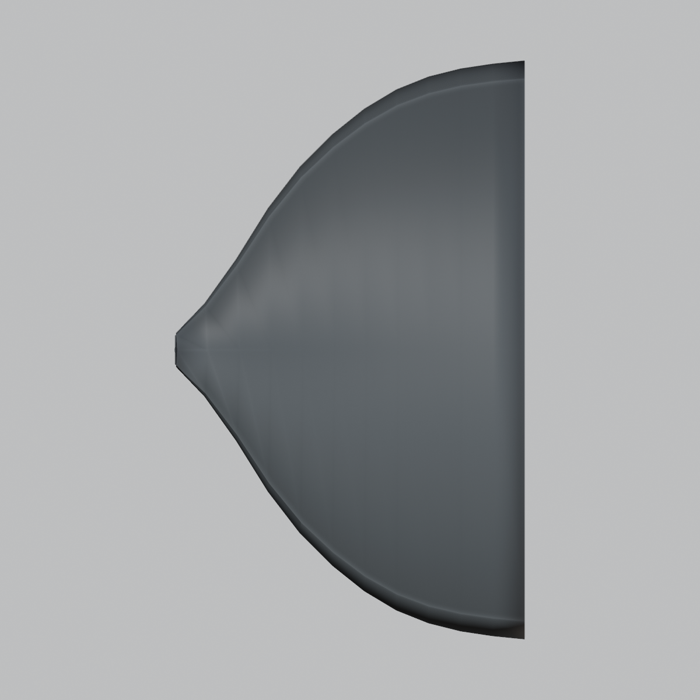
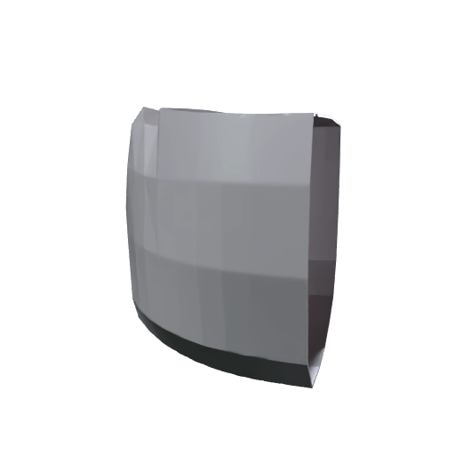

Free-form Meshy image-to-3D reconstruction could not preserve the locked ferry proportions closely enough and was held. V08 therefore uses Meshy's 3D remesh of the exact Gate-A hull as the full visible shell base. Blender applies one uniform scale/center fit only, then adds real geometric dents, waviness, small perforation holes and chipped hard edges to that Meshy shell.
Whole Bow
{kind=link}
{kind=link}
{kind=link}
{kind=link}
{kind=link}
{kind=link}
Surface Damage
{kind=link}
{kind=link}
Gate-A Envelope Comparison
Yellow wire = PASSED Gate-A authority. Gray = visible Meshy full shell. This is included because Meshy remesh changes the envelope slightly even after uniform-scale fit.
{kind=link}
{kind=link}
Reference / Meshy Source




V08 QA
Visible shell source: Meshy remesh task 01a0b6c1-1e0a-75f6-88ca-9421d43cd0c2.
Gate-A bounds: 11.018 × 18.198 × 12.954 m.
Meshy shell after uniform fit: 10.408 × 18.924 × 12.359 m.
Envelope drift: roughly 4–6% by axis; mean surface error ≈ 0.386 m before the local damage pass.
Review shell density: ~30k faces after decimation.
Global shell waviness: ~2.7 cm peak.
Localized dents: 9.
Jagged perforation holes: 6.
Hard profile-edge chips: 4.
Production shaders: NO.
Unreal import: NO.
Current Gate
PASS / FAIL / changes on the full-shell direction. The key question is whether this finally gives you the irregular damaged shell language you wanted without losing too much of the passed ferry bow identity.